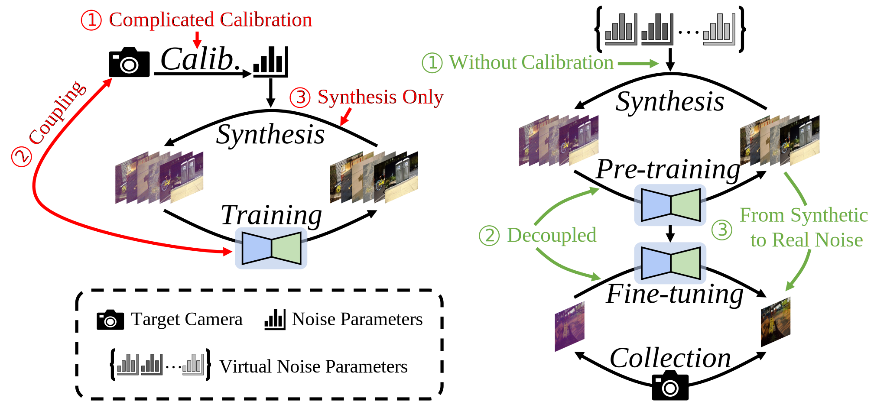
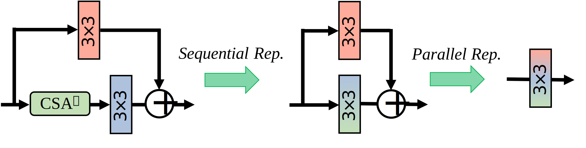
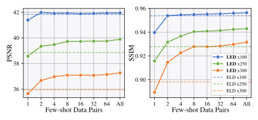
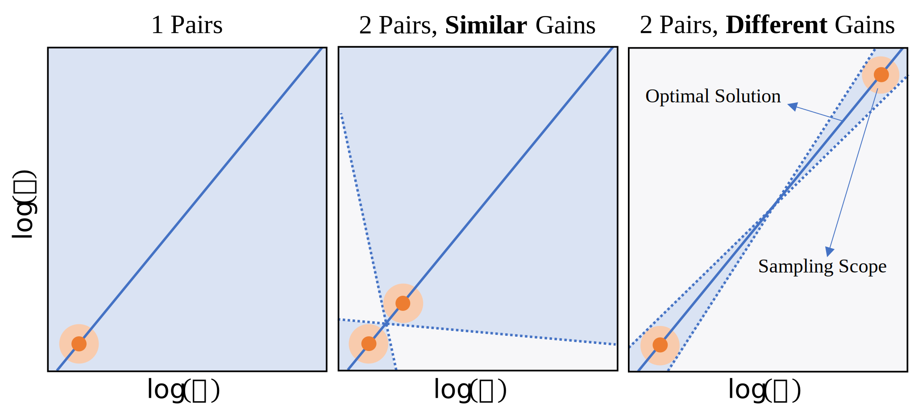

Lighting Every Darkness in Two Pairs:
A Calibration-Free Pipeline for RAW Denoising
1VCIP, CS, Nankai University
2 School of Mathematical Sciences, Peking University
3S-Lab, Nanyang Technological University
ICCV 2023
Abstract

Calibration-based methods (left) have dominated RAW image denoising under extremely low-light environments. However, these methods suffer from several main deficiencies: 1) the calibration procedure is laborious and time-consuming, 2) denoisers for different cameras are difficult to transfer, and 3) the discrepancy between synthetic noise and real noise is enlarged by high digital gain. To overcome the above shortcomings, we propose a calibration-free pipeline for Lighting Every Darkness (LED) (right), regardless of the digital gain or camera sensor. Instead of calibrating the noise parameters and training repeatedly, our method could adapt to a target camera only with few-shot paired data and fine-tuning. In addition, well-designed structural modification during both stages alleviates the domain gap between synthetic and real noise without any extra computational cost. With 2 pairs for each additional digital gain (in total 6 pairs) and 0.5% iterations, our method achieves superior performance over other calibration-based methods.
Method

Overview of our LED.
Unlike typical calibration-based algorithms, our method, as shown in the figure, consists of four steps in total:
1. Synthetic Noise Generation.
2. Pre-training the denoiser.
3. Collecting few-shot paired data using the target camera.
4. Fine-tuning the denoiser using the data collected in Step 3.
Compared to calibration-based algorithms, LED uses randomly sampled virtual camera parameters during synthetic noise generation, thereby avoiding the calibration process.
During each iteration of pre-training, a random virtual camera is first selected, and the training is performed using the paired data synthesized with that virtual camera. When the k-th virtual camera is selected, only the k-th CSA (Camera-Specific Alignment) is trained. This approach aims to decouple camera-specific information from noise information.
During Finetuning, the first step is to average all CSAs to enhance generalization capability. After that, an additional branch is added to handle out-of-model noise. It's important to note that the blue 3x3 convolution is frozen during this process.
Note: The network architecture of LED is exactly the same as other methods during deployment! This is possible thanks to the reparameterization technique. Below are the details regarding these aspects.
More detail can be found in our main paper.
Details when deploy
LED's another highlight lies in its final deployment, where the neural network remains completely consistent with other methods! No additional computational overhead is added, thanks to the following reparameterization process.

Discussion on "Why Two Pairs"?

The left figure shows the performance of LED as it varies with the number of few-shot data pairs. Notice that when using only one data pair for fine-tuning, LED's performance is not as high as ELD. However, with two data pairs, LED's performance significantly surpasses that of ELD.
Indeed, this is because the camera's gain and noise variance have a linear relationship, as illustrated in the right graph. With just two pairs of images, LED can effectively learn this linear relationship, as two points are enough to determine a straight line.
However, due to the presence of errors, the horizontal coordinates of these two points need to be sufficiently different. In other words, the two pairs of images used by LED should have a significant difference in their ISO settings at the time of capture (ISO < 500 and ISO > 5000).
More details (including validation experiments) can be found in our main paper.
Customize a Denoiser for Your 📷!
We are currently dedicated to training an exceptionally capable network that can generalize well to various scenarios using only two data pairs! We will update this section once we achieve our goal. Stay tuned and look forward to it!
BibTex
@inproceedings{jin2023lighting,
title={Lighting Every Darkness in Two Pairs: A Calibration-Free Pipeline for RAW Denoising},
author={Jin, Xin and Xiao, Jia-Wen and Han, Ling-Hao and Guo, Chunle and Zhang, Ruixun and Liu, Xialei and Li, Chongyi},
journal={Proceedings of the IEEE/CVF International Conference on Computer Vision},
year={2023}
}
Contact
Feel free to contact us at xjin[AT]mail.nankai.edu.cn!